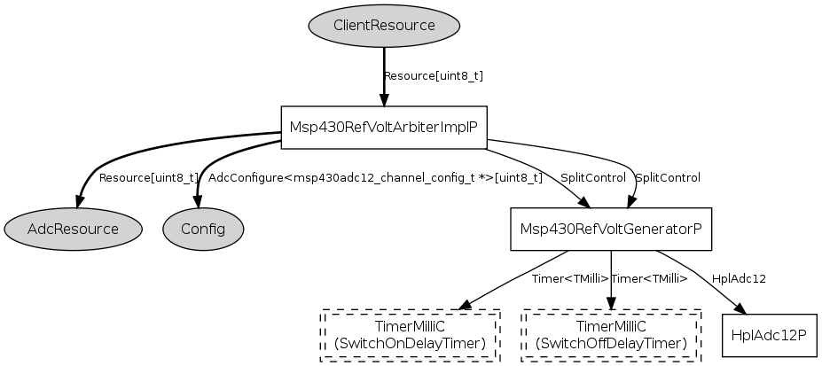

This component is meant to intercept requests to the Resource
interface on their way to the adc arbiter. It checks whether the client's
adc configuration requires the internal reference voltage generator of the
MSP430 to be enabled during the conversion by inspecting the client's
configuration data (using the AdcConfigure interface). If so it
makes sure that Resource.granted() is held back until the reference voltage
is stable. Clients SHOULD NOT wire to Msp430RefVoltArbiterP but
to the Resource interface provided by
Msp430Adc12ClientAutoRVGC.
